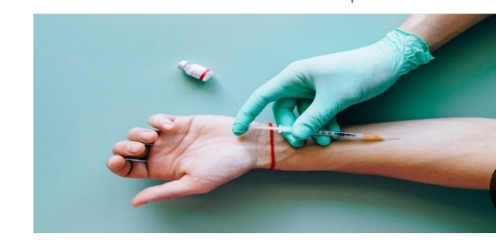

Wonderful news, right? wonderful news, right?
Get the answers from an infectious disease specialist. 
We've heard ii all since the pandemic started-lemon Juice can kill the coronavirus, mask don't works, if you already had COVID-19 you can't get it again or that the vaccine approved for emergency use will change your DNA or put a tracking device in your body.
It's almost like we need a strong dose of something to knock out all of the misinformation. But despite all the myth and urban legends, about half of the U.S. population is fully vaccinated.
Wonderful news, right? wonderful news, right?
Well, not to some vaccinated people against a new set of myths-they literally magnetic or they are going to share vaccines. So, what do vaccinated people need to do to stay safe? And is it still possible for them to spread COVID-19 to others? infectious disease specialist Lissette Cordono, MD, answers those questions and covers why vaccination is still one of our best weapons in the fight against COVID-19.
Copyright @ 2022 Health Essentials. All Right Reserved.